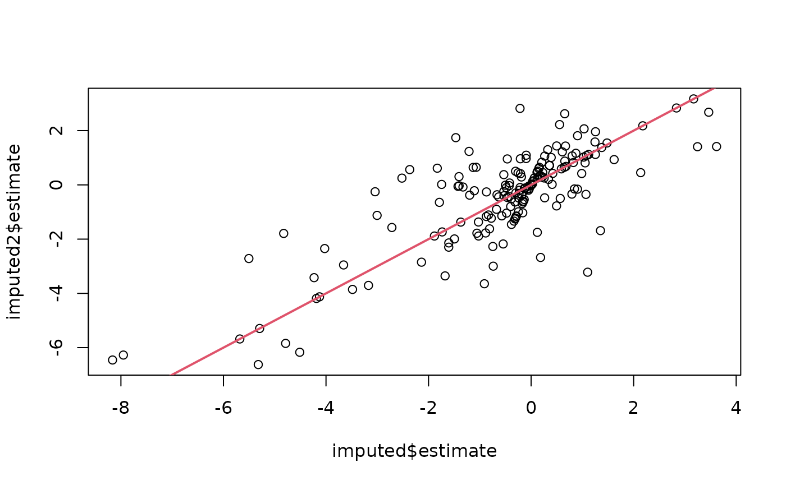
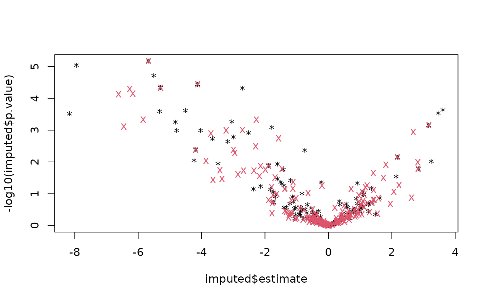

Impute data using limit of detection (LOD)
2024-04-22
Source:vignettes/TestingMissingInference.Rmd
TestingMissingInference.RmdThis vignette contains experimental code.
Example using prolfqua::MissingHelpers class
dd <- prolfqua::sim_lfq_data_protein_config(Nprot = 100,weight_missing = 2)## creating sampleName from file_name column## completing cases## completing cases done## setup done## [1] 552
contr_spec <- c("dilution.b-a" = "group_A - group_B", "dilution.c-e" = "group_A - group_Ctrl")
mh1 <- prolfqua::MissingHelpers$new(dd$data, dd$config, prob = 0.5,weighted = TRUE)
imputed <- mh1$get_contrasts(Contrasts = contr_spec)## dilution.b-a=group_A - group_B## dilution.c-e=group_A - group_Ctrl## dilution.b-a=group_A - group_B## dilution.c-e=group_A - group_Ctrl## dilution.b-a=group_A - group_B## dilution.c-e=group_A - group_Ctrl
mh2 <- prolfqua::MissingHelpers$new(dd$data, dd$config, prob = 0.5,weighted = FALSE)
imputed2 <- mh2$get_contrasts(Contrasts = contr_spec)## dilution.b-a=group_A - group_B
##
## dilution.c-e=group_A - group_Ctrl## dilution.b-a=group_A - group_B## dilution.c-e=group_A - group_Ctrl## dilution.b-a=group_A - group_B## dilution.c-e=group_A - group_Ctrl
mh1$get_lod()## 50%
## 18.13636
plot( imputed$estimate, -log10(imputed$p.value), pch = "*" )
points(imputed2$estimate, -log10(imputed2$p.value), col = 2, pch = "x")
Modelling with linear models
Model with missing data
modelName <- "f_condtion_r_peptide"
formula_Protein <-
prolfqua::strategy_lm("abundance ~ group_",
model_name = modelName)
dd_lfq <- prolfqua::LFQData$new(dd$data, dd$config)
mod <- prolfqua::build_model(
dd_lfq,
formula_Protein,
model_name = modelName)## Warning: There were 11 warnings in `dplyr::mutate()`.
## The first warning was:
## ℹ In argument: `linear_model = purrr::map(data, model_strategy$model_fun, pb =
## pb)`.
## ℹ In group 18: `protein_Id = "DoWup2~8058"`.
## Caused by warning:
## ! contrasts can be applied only to factors with 2 or more levels
## ℹ Run `dplyr::last_dplyr_warnings()` to see the 10 remaining warnings.
mod$model_df## # A tibble: 100 × 9
## # Groups: protein_Id [100]
## protein_Id data linear_model has_model_fit isSingular df.residual sigma
## <chr> <list> <list> <lgl> <lgl> <dbl> <dbl>
## 1 0EfVhX~3967 <tibble> <lm> TRUE FALSE 6 1.22
## 2 0m5WN4~6025 <tibble> <lm> TRUE FALSE 4 0.447
## 3 0YSKpy~2865 <tibble> <lm> TRUE TRUE 1 1.55
## 4 3QLHfm~8938 <tibble> <lm> TRUE FALSE 7 0.923
## 5 3QYop0~7543 <tibble> <lm> TRUE FALSE 7 0.808
## 6 76k03k~7094 <tibble> <lm> TRUE FALSE 8 1.09
## 7 7cbcrd~7351 <tibble> <lm> TRUE FALSE 9 0.889
## 8 7QuTub~1867 <tibble> <lm> TRUE FALSE 6 0.644
## 9 7soopj~5352 <tibble> <lm> TRUE FALSE 3 0.920
## 10 7zeekV~7127 <tibble> <lm> TRUE FALSE 6 1.06
## # ℹ 90 more rows
## # ℹ 2 more variables: nr_coef <int>, nr_coef_not_NA <int>
mod$model_df$nr_coef_not_NA |> table()##
## 2 3
## 15 74
mod$model_df$isSingular |> table()##
## FALSE TRUE
## 69 20
mod$model_df |> nrow()## [1] 100
mod$get_anova()## # A tibble: 69 × 10
## protein_Id factor Df Sum.Sq Mean.Sq F.value p.value isSingular nr_coef
## <chr> <chr> <int> <dbl> <dbl> <dbl> <dbl> <lgl> <int>
## 1 0EfVhX~3967 group_ 2 16.1 8.04 5.39 0.0457 FALSE 3
## 2 0m5WN4~6025 group_ 2 37.9 18.9 94.9 0.000426 FALSE 3
## 3 3QLHfm~8938 group_ 2 3.90 1.95 2.29 0.172 FALSE 3
## 4 3QYop0~7543 group_ 2 4.44 2.22 3.40 0.0932 FALSE 3
## 5 76k03k~7094 group_ 2 2.11 1.05 0.891 0.448 FALSE 3
## 6 7cbcrd~7351 group_ 2 21.0 10.5 13.3 0.00205 FALSE 3
## 7 7QuTub~1867 group_ 2 14.1 7.04 17.0 0.00338 FALSE 3
## 8 7zeekV~7127 group_ 2 0.425 0.212 0.189 0.832 FALSE 3
## 9 9VUkAq~9664 group_ 2 7.50 3.75 11.8 0.0128 FALSE 3
## 10 At886V~1021 group_ 2 46.3 23.2 49.4 0.00151 FALSE 3
## # ℹ 59 more rows
## # ℹ 1 more variable: FDR <dbl>
prolfqua::model_summary(mod)## $exists
##
## FALSE TRUE
## 11 89
##
## $isSingular
##
## FALSE TRUE
## 69 20
maxcoef <- max(mod$model_df$nr_coef_not_NA, na.rm = TRUE)
goodmods <- mod$model_df |> dplyr::filter(isSingular == FALSE, has_model_fit == TRUE, nr_coef_not_NA == maxcoef)
dim(goodmods)## [1] 61 9## nr
## 3
## 61## nr
## 3
## 61## (Intercept) group_B group_Ctrl
## (Intercept) 0.4317112 -0.4317112 -0.4317112
## group_B -0.4317112 0.7569259 0.4317112
## group_Ctrl -0.4317112 0.4317112 0.8485382Model with lod imputation
loddata <- dd$data
loddata <- loddata |> dplyr::mutate(abundance = ifelse(is.na(abundance), mh1$get_lod(), abundance))
modI <- prolfqua::build_model(
loddata,
formula_Protein,
model_name = modelName,
subject_id = dd_lfq$relevant_hierarchy_keys())
modI$model_df$nr_coef_not_NA |> table()##
## 3
## 100
modI$model_df$isSingular |> table()##
## FALSE
## 100
modI$model_df |> nrow()## [1] 100
allModels <- modI$model_df$linear_model
xx <- lapply(allModels, vcov)
sum_matrix <- Reduce(`+`, xx)
sum_matrix/length(xx)## (Intercept) group_B group_Ctrl
## (Intercept) 0.4759103 -0.4759103 -0.4759103
## group_B -0.4759103 0.9518206 0.4759103
## group_Ctrl -0.4759103 0.4759103 0.9518206
m <- (modI$model_df$linear_model[[1]])
df.residual(m)## [1] 9
sigma(m)## [1] 1.222678
vcov(m)## (Intercept) group_B group_Ctrl
## (Intercept) 0.3737352 -0.3737352 -0.3737352
## group_B -0.3737352 0.7474704 0.3737352
## group_Ctrl -0.3737352 0.3737352 0.7474704Session Info
## R version 4.5.2 (2025-10-31)
## Platform: x86_64-pc-linux-gnu
## Running under: Ubuntu 24.04.4 LTS
##
## Matrix products: default
## BLAS: /usr/lib/x86_64-linux-gnu/openblas-pthread/libblas.so.3
## LAPACK: /usr/lib/x86_64-linux-gnu/openblas-pthread/libopenblasp-r0.3.26.so; LAPACK version 3.12.0
##
## locale:
## [1] LC_CTYPE=C.UTF-8 LC_NUMERIC=C LC_TIME=C.UTF-8
## [4] LC_COLLATE=C.UTF-8 LC_MONETARY=C.UTF-8 LC_MESSAGES=C.UTF-8
## [7] LC_PAPER=C.UTF-8 LC_NAME=C LC_ADDRESS=C
## [10] LC_TELEPHONE=C LC_MEASUREMENT=C.UTF-8 LC_IDENTIFICATION=C
##
## time zone: UTC
## tzcode source: system (glibc)
##
## attached base packages:
## [1] stats graphics grDevices utils datasets methods base
##
## loaded via a namespace (and not attached):
## [1] Rdpack_2.6.6 gridExtra_2.3.1 rlang_1.3.0
## [4] magrittr_2.0.5 clue_0.3-68 GetoptLong_1.1.1
## [7] otel_0.2.0 matrixStats_1.5.0 compiler_4.5.2
## [10] mgcv_1.9-3 png_0.1-9 systemfonts_1.3.2
## [13] vctrs_0.7.3 pkgconfig_2.0.3 shape_1.4.6.1
## [16] crayon_1.5.3 fastmap_1.2.0 backports_1.5.1
## [19] utf8_1.2.6 rmarkdown_2.31 nloptr_2.2.1
## [22] ragg_1.5.2 UpSetR_1.4.1 purrr_1.2.2
## [25] xfun_0.59 glmnet_5.0 jomo_2.7-6
## [28] logistf_1.26.1 cachem_1.1.0 jsonlite_2.0.0
## [31] progress_1.2.3 pan_2.0 broom_1.0.13
## [34] parallel_4.5.2 prettyunits_1.2.0 cluster_2.1.8.1
## [37] R6_2.6.1 bslib_0.11.0 stringi_1.8.7
## [40] RColorBrewer_1.1-3 limma_3.66.0 boot_1.3-32
## [43] rpart_4.1.24 jquerylib_0.1.4 Rcpp_1.1.2
## [46] iterators_1.0.14 knitr_1.51 IRanges_2.44.0
## [49] Matrix_1.7-4 splines_4.5.2 nnet_7.3-20
## [52] tidyselect_1.2.1 yaml_2.3.12 doParallel_1.0.17
## [55] codetools_0.2-20 lattice_0.22-7 tibble_3.3.1
## [58] plyr_1.8.9 withr_3.0.3 S7_0.2.2
## [61] prolfqua_1.6.3 evaluate_1.0.5 desc_1.4.3
## [64] survival_3.8-3 circlize_0.4.18 pillar_1.11.1
## [67] mice_3.19.0 foreach_1.5.2 stats4_4.5.2
## [70] reformulas_0.4.4 plotly_4.12.0 generics_0.1.4
## [73] S4Vectors_0.48.1 hms_1.1.4 ggplot2_4.0.3
## [76] scales_1.4.0 minqa_1.2.8 glue_1.8.1
## [79] lazyeval_0.2.3 tools_4.5.2 data.table_1.18.4
## [82] lme4_2.0-1 forcats_1.0.1 fs_2.1.0
## [85] grid_4.5.2 tidyr_1.3.2 rbibutils_2.4.1
## [88] colorspace_2.1-2 nlme_3.1-168 formula.tools_1.7.1
## [91] cli_3.6.6 textshaping_1.0.5 viridisLite_0.4.3
## [94] ComplexHeatmap_2.26.1 dplyr_1.2.1 gtable_0.3.6
## [97] sass_0.4.10 digest_0.6.39 operator.tools_1.6.3.1
## [100] BiocGenerics_0.56.0 ggrepel_0.9.8 rjson_0.2.23
## [103] htmlwidgets_1.6.4 farver_2.1.2 htmltools_0.5.9
## [106] pkgdown_2.2.0 lifecycle_1.0.5 httr_1.4.8
## [109] GlobalOptions_0.1.4 mitml_0.4-5 statmod_1.5.2
## [112] MASS_7.3-65